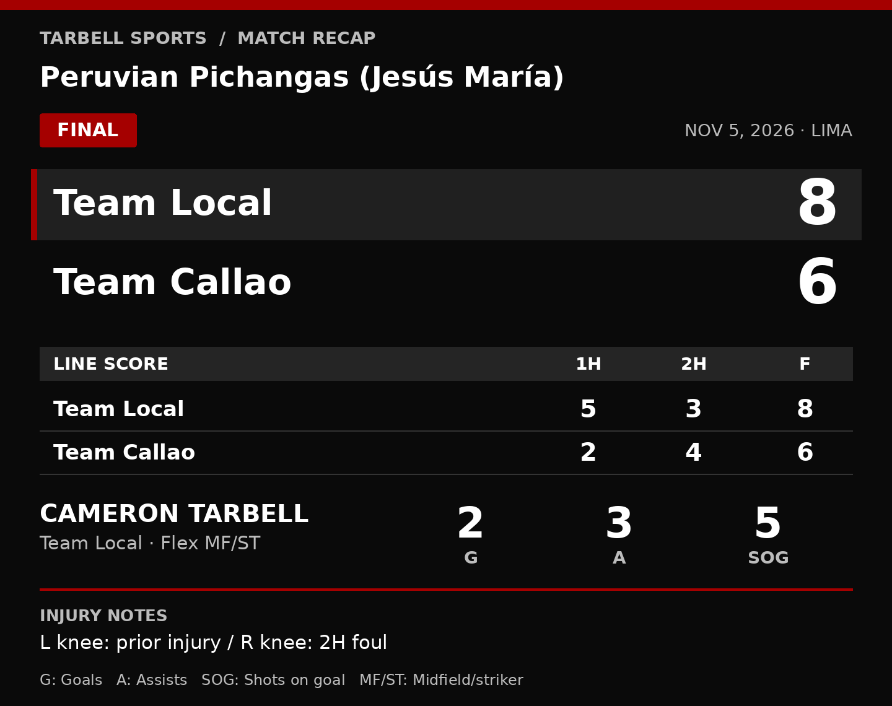

JESÚS MARÍA, LIMA — The left knee was already hurting. The production showed up anyway. Cameron Tarbell scored twice, supplied three assists and put five shots on goal Thursday night as Team Local beat Team Callao 8–6 in Peruvian Pichangas (Jesús María), turning an injury-clouded return into a standout attacking performance.
Team Local carried a 5–2 lead into halftime and added three more goals after the break. Callao scored four in the second half, outscoring Local in that period but falling two goals short in the final tally. The box score captures both halves of the story: a strong first-half cushion for Local, followed by a tighter finish as Callao cut into the margin.


Line score & player stats (text tables)
| Team | 1H | 2H | F |
|---|---|---|---|
| Team Local | 5 | 3 | 8 |
| Team Callao | 2 | 4 | 6 |
| Player | G | A | SOG |
|---|---|---|---|
| Cameron Tarbell | 2 | 3 | 5 |
Flex MF/ST · L knee: prior injury / R knee: 2H foul. MF = midfield; ST = striker; 2H = second half. No other individual player statistics reported.
Tarbell’s own line — two goals, three assists, five shots on goal — reflected a role that moved between midfield and striker rather than staying fixed in one position. He was still somewhat sluggish with the prior left-knee injury, but the flexibility gave him ways to influence the game as both a finisher and a provider. His five direct goal contributions accounted for more than half of Local’s eight goals.
There could have been more assists. Tarbell created several additional opportunities that teammates could not finish, with shots either failing to find the net or going off target. Those near-connections do not go into his assist total, but they add context to a night in which his passing repeatedly put Local in position to threaten.
“It felt like one of those games where everything clicked and I felt like I had control. Not often I’ve gotten that feeling. I figured tonight would just be more of the normal games but the team wanted me to play flex between midfield and striker spots which worked out well,” Tarbell said.
The night also brought a fresh injury concern. Early in the second half, a double-team sent Tarbell to the turf, hurting his right knee while drawing a foul. He had entered the match with his left knee still injured. The collision left him dealing with concerns in both knees rather than just the injury he brought into the game.
His influence extended beyond the attack. During one defensive stretch of roughly a minute, Tarbell broke up play three times through interceptions and knocking the ball out of bounds. He kept Callao working along the sideline and denied access to the center of the field — a concentrated spell of defensive disruption to go with the scoring and chance creation.
For Team Local, the result is settled: an 8–6 win in Jesús María. Tarbell’s next appearance is not. With the earlier left-knee injury and the new right-knee concern, it remains unknown whether he will play in the La Molina league later this week or when he will return to the field. The performance delivered a clear answer about his impact on this match, but no certainty about the next one.